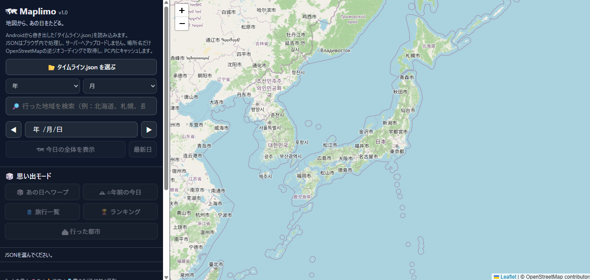
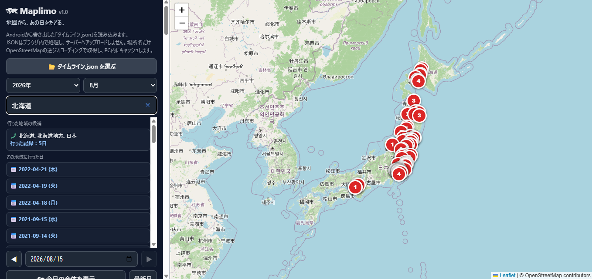
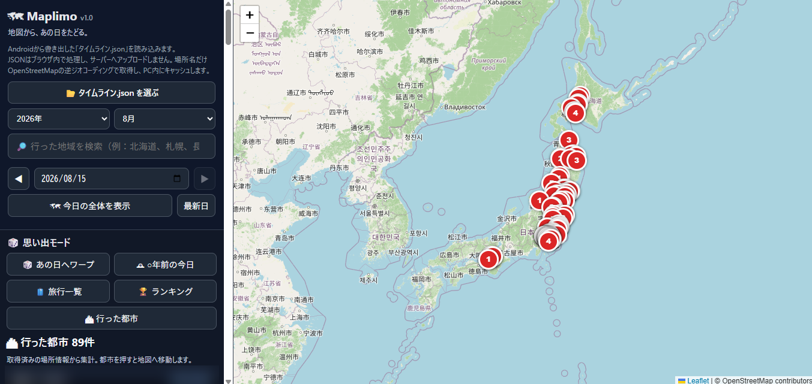

Maplimoとは
Maplimo（マプリモ）は、Androidなどから書き出した
Google Maps Timelineの タイムライン.json を
PCのブラウザで読み込み、過去の訪問場所や移動記録を
地図上で振り返るための非公式ビューアです。
「いつ、どこへ行ったか」を日付から見るだけでなく、 地域名や旅行、都市、思い出などから過去の行動記録をたどれます。
主な機能
タイムラインJSONを読み込み
タイムライン.json を選択、またはドラッグ＆ドロップで読み込めます。
日付ごとの地図表示
訪問場所、移動、経路を日付ごとに地図上で確認できます。
地域名から訪問日検索
「北海道」「札幌」などの地域名から、 その地域へ行った日を探せます。
あの日へワープ
ランダムな過去の日や「○年前の今日」へ移動して、 思い出を振り返れます。
旅行一覧・ランキング
旅行一覧、最長移動、よく訪れた場所などを確認できます。
行った都市
訪問した都市を一覧・地図で確認し、 都市マーカーから訪問日へ移動できます。
お気に入り・思い出メモ
気に入った日をお気に入り登録し、 日ごとの思い出メモを残せます。
Google Maps連携
表示中の地点をGoogle Mapsで開いて確認できます。
地域名から探す
Maplimoでは、細かい場所名を覚えていなくても、 地域名から過去の訪問日を探せます。
例えば検索欄に、
- 北海道
- 札幌
- 長野
- 大阪
などと入力してEnterを押すと、 その地域に含まれる訪問記録の日付が一覧表示されます。
「北海道へ行ったのはいつだったか」程度しか覚えていない場合でも、 候補日から記録をたどれます。
画面

タイムラインを地図で振り返るメイン画面

地域名から訪問日を探す検索機能

訪問した都市の一覧・都市マップ
使い方
Maplimo_v1.0.htmlをChrome / Braveなどのブラウザで開きます。- 「タイムライン.json を選ぶ」を押します。
- 端末から書き出した
タイムライン.jsonを選択します。 - 読み込み後、地図上で過去の記録を振り返ります。
JSONファイルはドラッグ＆ドロップでも読み込めます。
タイムラインJSONを用意する
Android
- Androidの「設定」アプリを開きます。
- 「位置情報」→「位置情報サービス」→「タイムライン」を開きます。
- 「タイムライン データをエクスポート」を選びます。
- 保存場所を選び、JSONファイルを書き出します。
iPhone / iPad
Google マップのタイムライン画面から 「位置情報とプライバシーの設定」を開き、 「タイムライン データをエクスポート」を選びます。
端末・OS・アプリのバージョンによって、 表示名や手順が変わる場合があります。
プライバシー
読み込んだ タイムライン.json 本体は、
ブラウザ内で処理されます。
MaplimoがタイムラインJSON全体を サーバーへアップロードすることはありません。
ただし、以下の機能では外部サービスへ通信します。
- 地図表示：OpenStreetMap
- 場所名・住所の取得：OpenStreetMap Nominatim
- 地域検索：OpenStreetMap Nominatim
- Google Mapsで場所を見る：Google Maps
Nominatim利用時は検索語や緯度経度が送信されます。
取得した場所名・住所はブラウザの localStorage にキャッシュされます。
お気に入り・思い出メモも
ブラウザの localStorage に保存されます。
サンプルデータ
配布ZIPには sample_timeline.json が含まれています。
公開場所を使った架空のサンプルで、 実際の個人行動履歴は含まれていません。
対応環境
使用ライブラリ・外部サービス
- Leaflet 1.9.4
- OpenStreetMap
- Nominatim
地図データ © OpenStreetMap contributors
注意事項
- MaplimoはGoogle、Google Maps、OpenStreetMap Foundationなどから 承認・提供されている公式製品ではありません。
- Google側のタイムラインエクスポート形式が将来変更された場合、 読み込めなくなる可能性があります。
- Maplimo本体は単一HTMLですが、 地図表示や場所名検索にはインターネット接続が必要です。
Download / Source
最新版、更新履歴、ソースコードは GitHub上の公式リポジトリから確認できます。